Capillary Fluid Exchange Starling forces, the glycocalyx & the lymphatics
Every lecture slide, shown in full — then explained the way a tutor would: the mechanism, the numbers worked through, the clinical pay-off, and the threads that tie capillary, interstitium and lymphatic into one fluid-balance story. The slide states the fact; the note underneath tells you what it means.
Covers 37 slides · 7 partsFigures the lecture's own slidesWorked example Starling forces
How to use this guide
Each slide is shown in full (click to enlarge). The text underneath is not a re-caption — it adds the mechanism, the reasoning and the clinical angle the slide leaves unsaid, and links each idea to the next. The coloured notes flag the asides:
Why / mechanism The physiology the slide assumes — forces, gradients and why they balance.
Exam hook The discriminating fact, number or framework that earns the mark.
Clinical What this looks like on a real patient — oedema, sepsis, lymphoedema.
§1LO · Capillary network structure
Capillary network structure
Where exchange happens — and how flow through it is rationed.
Capillaries are where the whole cardiovascular system earns its keep: a single-cell-thick wall across which gases, nutrients and water move. The structure is built to maximise exchange and to ration blood to tissue that needs it.
SLIDE 4The capillary bed — arteriole to venule
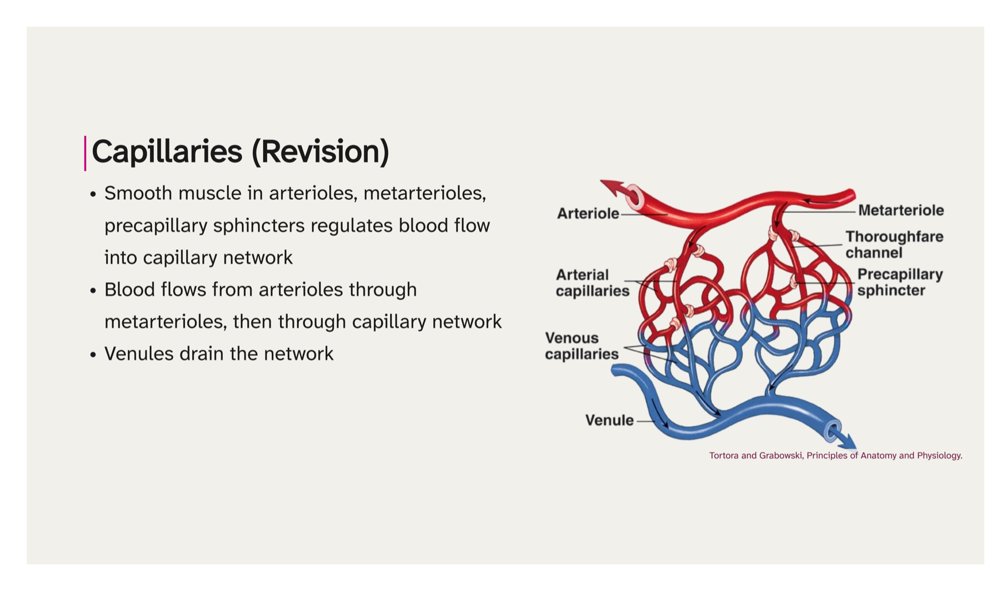
The detail worth adding: although each capillary is tiny, there are so many in parallel that the capillary bed has by far the largest total cross-sectional area in the circulation — which, by continuity, makes blood flow slowest here. That slow transit is not a flaw; it's the point, giving red cells the fraction of a second they need to unload O2 and pick up CO2. The precapillary sphincter is the tap that decides whether any given capillary is open at all.
SLIDE 5Vasomotion
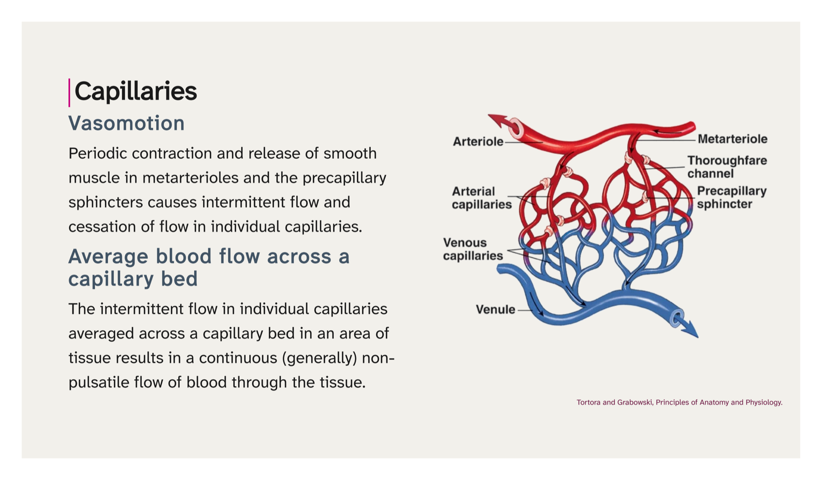
Flow through a single capillary isn't steady — the sphincters cycle open and shut (vasomotion), so any one capillary is intermittently perfused while the average flow across the bed stays smooth. Think of it as time-sharing a limited blood supply across many vessels.
SLIDE 6Vasomotion is matched to demand
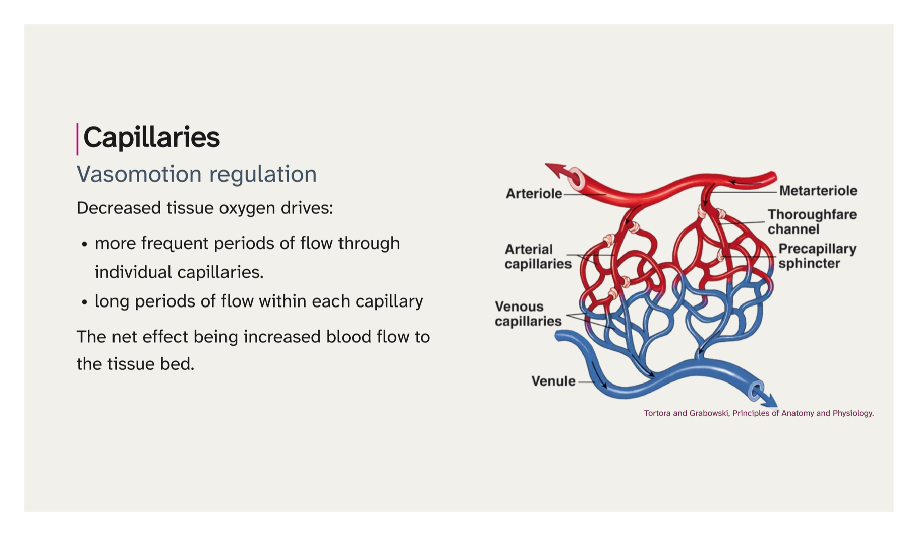
Why · the tissue sets its own supply
This is local metabolic autoregulation: when a tissue works harder and its O2 falls (and CO2, H+, adenosine rise), the sphincters open more often and for longer, so flow rises exactly where and when it's needed — no instruction from the brain required. It's the same logic as exercising muscle going hyperaemic.
Read the three types as permeability matched to the organ's job, not as a list to memorise. Continuous (muscle, skin, and — tightest of all — brain) keep a tight seal for controlled exchange. Fenestrated have pores for fast, high-volume water-and-solute movement — exactly what the kidney glomerulus, gut and endocrine glands need. Sinusoidal are leaky enough to pass whole cells and large proteins, which is why they sit in the liver, spleen and bone marrow, where cells and big molecules must enter and leave the blood.
Exam hook · type ↔ organ
Continuous = brain/muscle; fenestrated = kidney/gut/endocrine; sinusoidal = liver/spleen/marrow. Give the organ and the type falls out — and vice versa.
§2LO · Caveolae & intercellular clefts
The capillary wall — clefts, caveolae & permeability
The gaps in the wall — and the one dimension the whole lecture hinges on.
How does anything cross a wall of endothelial cells? Through the clefts between them, by caveolae vesicles, or (for lipid-soluble things) straight through the cell. One number here — the cleft width — quietly sets up all of Starling's forces.
SLIDE 10Intercellular clefts & caveolae
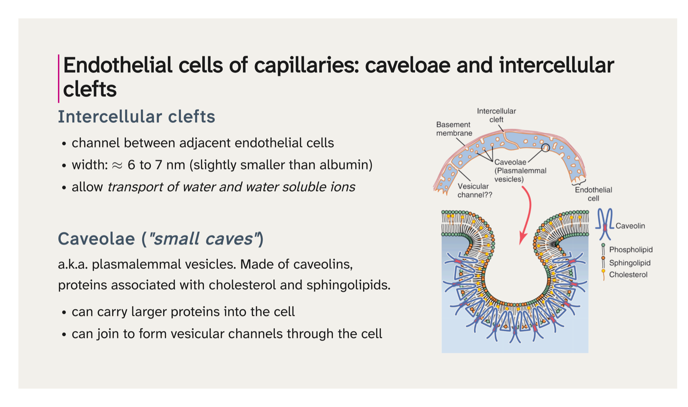
Why · 7 nm is the whole story
The cleft is ~6–7 nm — just smaller than albumin (~7 nm). That single fact is the foundation of the rest of the lecture: water and small ions pass freely, but plasma protein is held back, so protein stays concentrated inside the capillary. That retained protein is what generates the plasma oncotic pressure (Πp) pulling fluid back in — the inward Starling force. No protein sieving, no Starling balance. Caveolae handle the exceptions, shuttling larger molecules across by transcytosis.
SLIDE 11Cleft size varies between organs
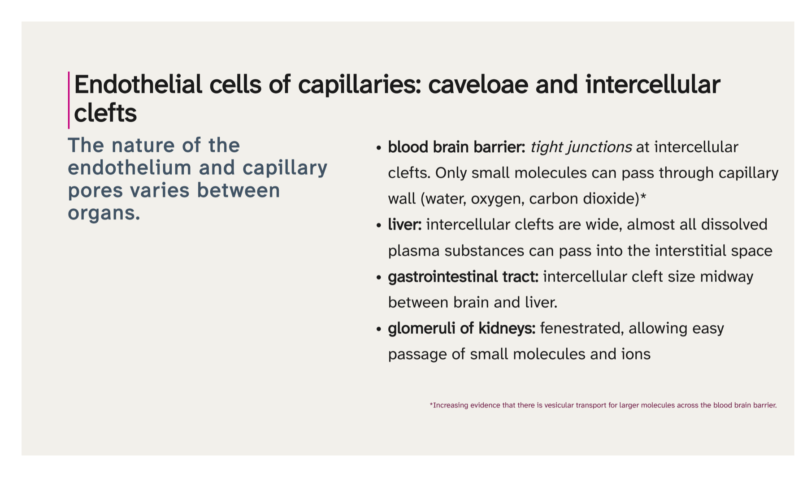
Clinical · the blood-brain barrier
Sealing those clefts with tight junctions is exactly what makes the blood-brain barrier — protective, but also why many drugs (and large/water-soluble molecules) can't reach the brain, and a major problem in treating CNS infection and tumours. At the other extreme, the liver's wide clefts let almost all plasma solutes into the interstitium, which suits its metabolic role.
SLIDE 12Glomerular capillaries (SEM)
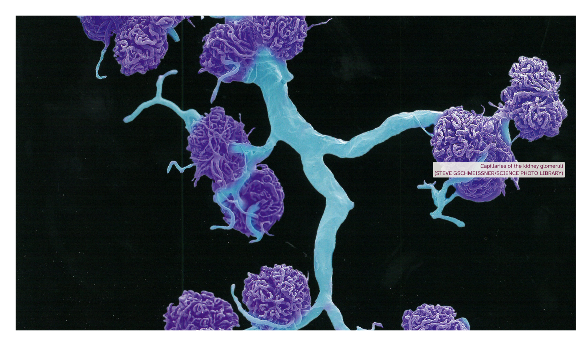
SLIDE 13Fenestrated endothelium (SEM)
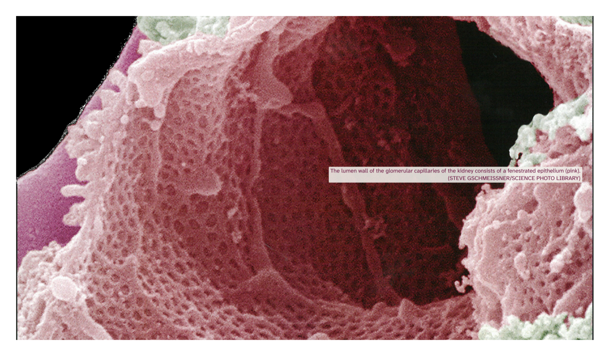
These micrographs make the point concrete: the glomerular wall is riddled with fenestrae (windows), which is how the kidney filters ~180 L of plasma a day. The structure you can see is the permeability you can predict.
SLIDE 14Tight junctions (brain endothelium)
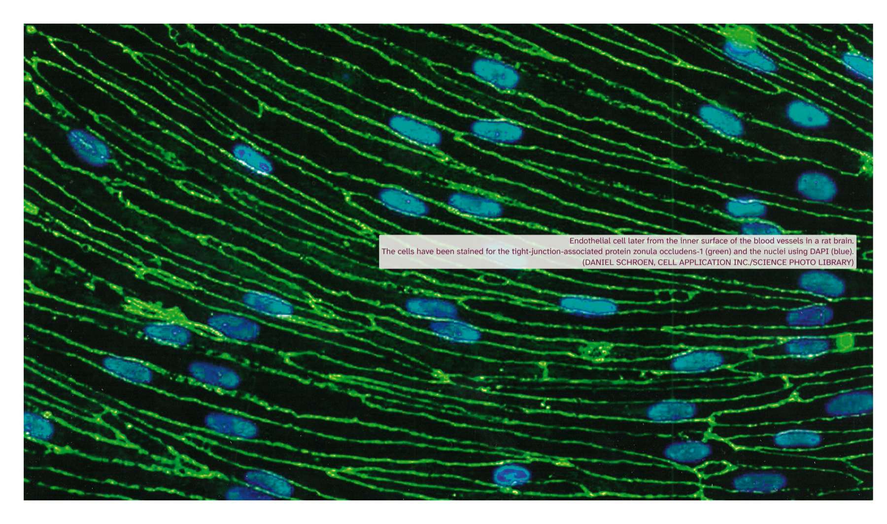
The green mesh is ZO-1, a tight-junction protein, outlining where adjacent brain endothelial cells are stitched shut. This is the molecular face of the blood-brain barrier from Slide 11 — the seal that the leaky glomerulus above pointedly lacks.
§3LO · Diffusion & Starling's hypothesis
Diffusion & Starling's hypothesis
Two transport routes — and the pressure balance that governs water.
Material crosses the wall two ways: diffusion (the workhorse for solutes and gases) and bulk flow of water driven by pressure — and it's the bulk-flow balance that Starling's four forces describe. Get this section and you can explain every kind of oedema.
SLIDE 17Diffusion down concentration gradients
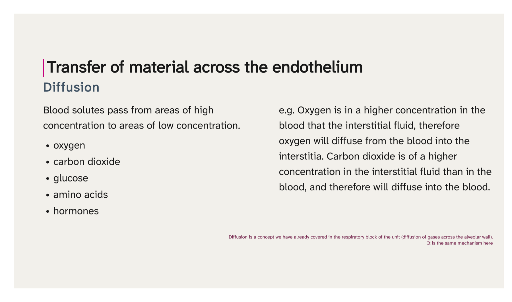
Keep diffusion and bulk flow separate in your head. Diffusion — driven purely by concentration gradients — moves the vast majority of O2, CO2, glucose and waste; it's the same mechanism you met for gas exchange at the alveolus. Bulk flow (Starling, coming up) moves comparatively little net fluid but is what governs the distribution of water between blood and tissue — and therefore oedema.
SLIDE 18Fenestra size sets what gets through
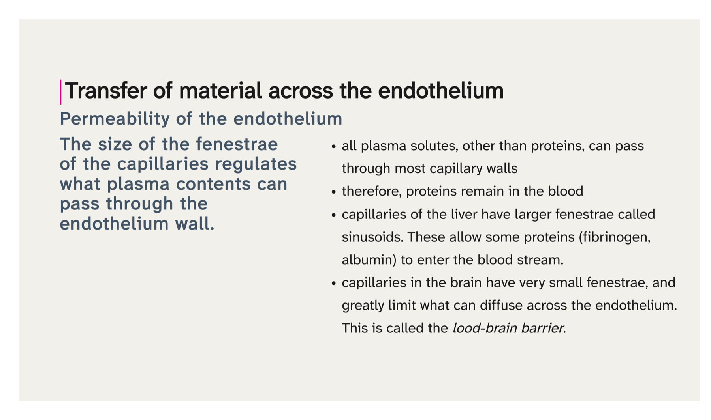
The working rule: pore/fenestra size sets the cut-off, so every plasma solute except protein crosses most capillary walls freely — proteins stay in the blood. The two extremes are restated here with their mechanism: the liver's sinusoids are leaky enough to let even fibrinogen and albumin out, while the brain's tiny openings sharply limit crossing (the blood-brain barrier). That "small solutes yes, protein no" selectivity is exactly the sieve Starling's forces assume.
SLIDE 19Permeability depends on molecule size
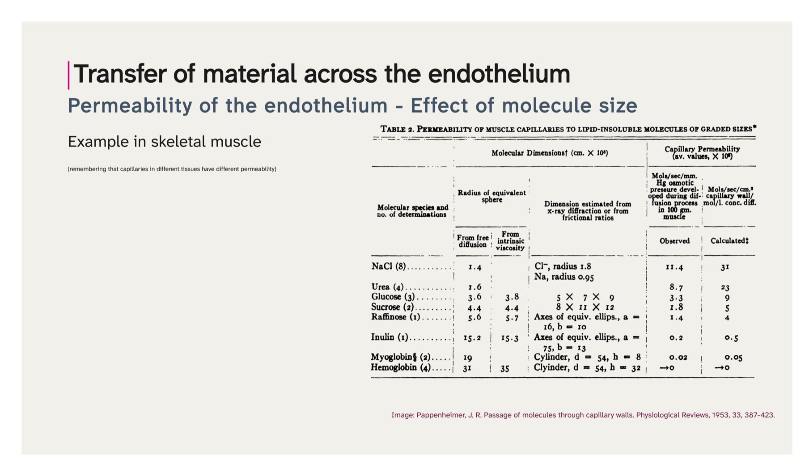
Pappenheimer's classic table shows permeability falling steeply as molecules get larger — small ions (NaCl, urea) cross almost freely, while albumin and haemoglobin barely pass at all. That size cut-off, at roughly the cleft width, is the physiological basis for proteins staying intravascular. (The reminder on the slide is fair: different tissues sit at different points on this curve.)
SLIDE 20Lipid-soluble material
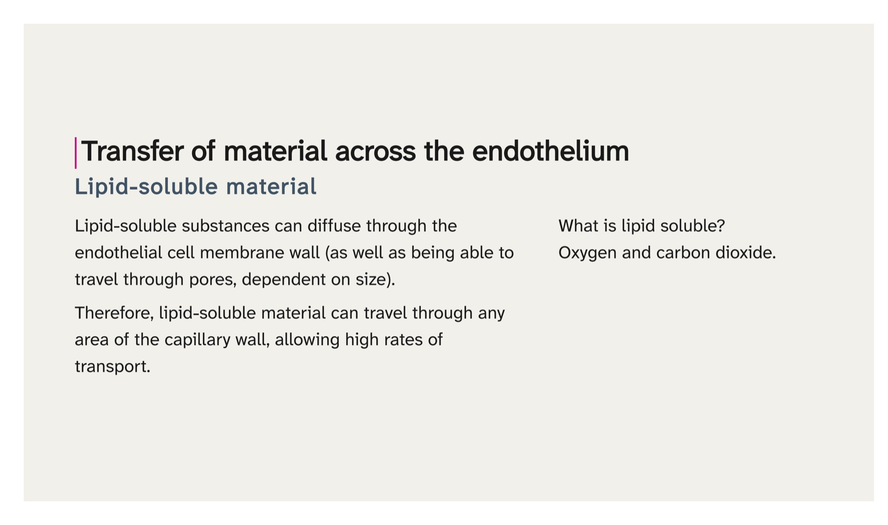
SLIDE 21Lipid-insoluble material
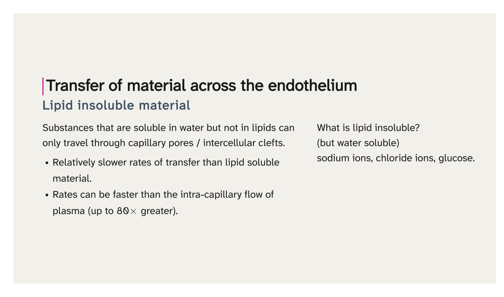
The two routes have very different limits. Lipid-soluble molecules — above all O2 and CO2 — dissolve straight through the endothelial membrane, so the entire wall surface is available and exchange is flow-limited (limited only by how fast blood delivers them). Water-soluble solutes are confined to the tiny pore area, so they're size- and diffusion-limited. That contrast is why gases equilibrate almost instantly while large hydrophilic drugs lag.
SLIDE 22The four Starling forces, defined
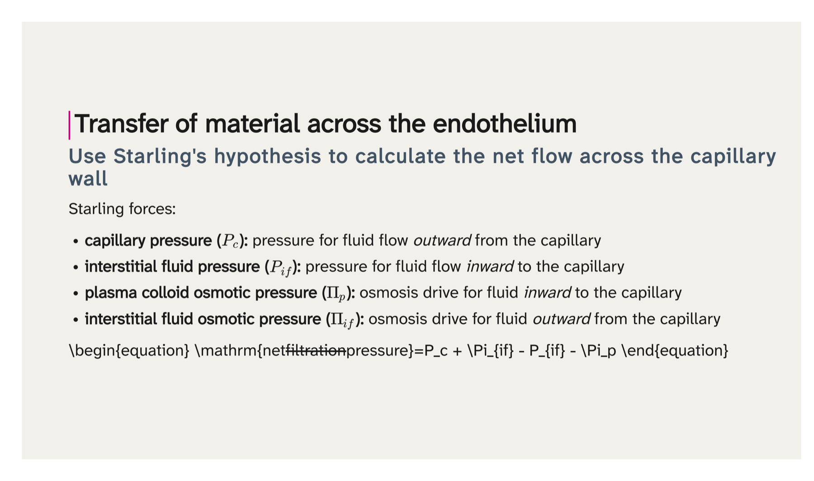
Why · two push out, two pull in
Only four pressures act on the water. Out of the capillary: capillary hydrostatic pressure Pc (blood pushing outward) and interstitial oncotic pressure Πif (tissue protein pulling fluid out). Into the capillary: plasma oncotic pressure Πp (retained plasma protein pulling fluid back) and interstitial hydrostatic pressure Pif (tissue pressure pushing back — normally slightly negative, so it actually assists filtration). Pc is the big, regulated one; Πp depends almost entirely on albumin.
SLIDE 23Net filtration pressure equation
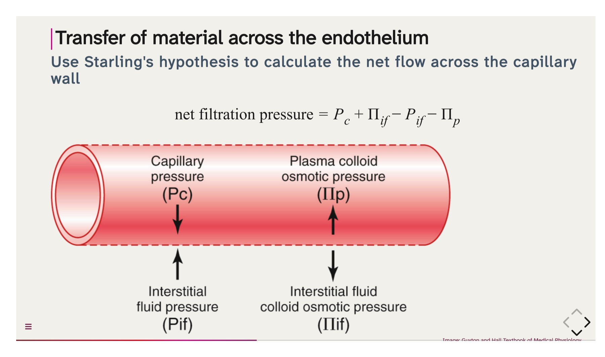
Put together, the net outward (filtration) pressure is NFP = Pc + Πif − Pif − Πp. A positive result means net filtration (fluid leaves); a negative result means net reabsorption (fluid returns). Watch the signs — because Pif is normally negative, the "−Pif" term adds to filtration.
SLIDE 24Arterial end — net +13 mmHg
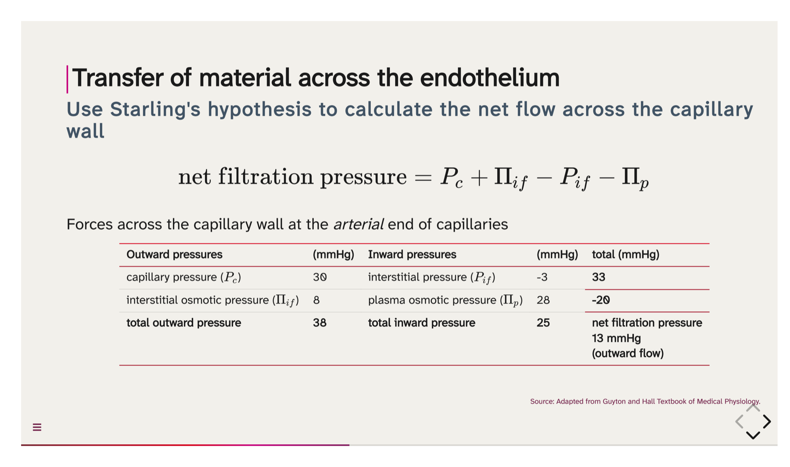
SLIDE 25Venous end — net −7 mmHg
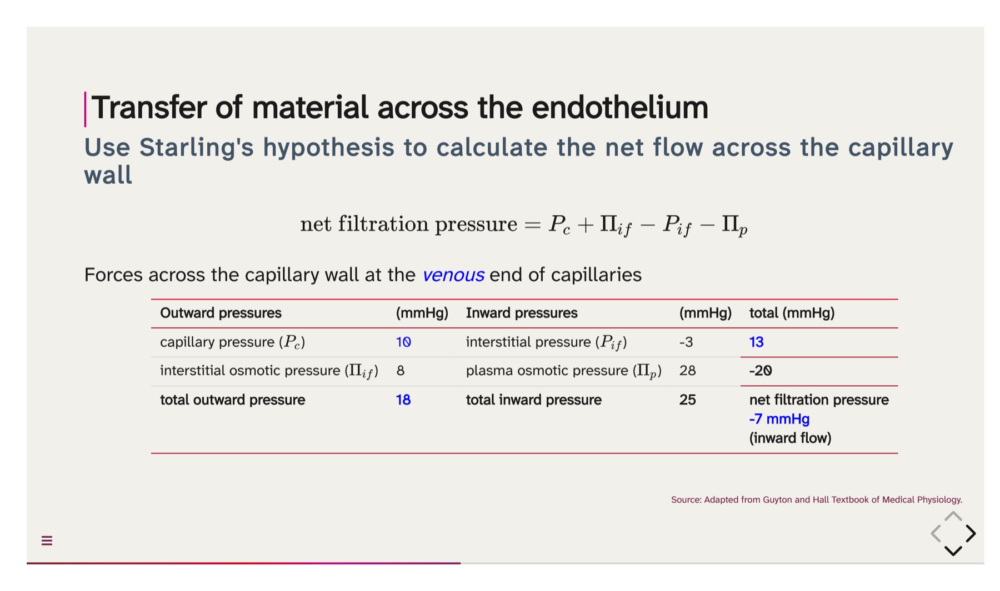
Why · what actually flips the balance
Across these two slides only one number changes: capillary pressure Pc falls from 30 → 10 mmHg as blood runs down the capillary, while the oncotic pull Πp (28) stays put. So the arterial end filters (+13) and the venous end reabsorbs (−7). The lesson: it's the drop in hydrostatic pressure along the capillary, against a steady oncotic pressure, that reverses the flow.
Worked example · Starling net filtration pressure
Using the lecture's values (Pc = capillary, Πif = 8, Pif = −3, Πp = 28 mmHg) in NFP = Pc + Πif − Pif − Πp:
Arterial end (Pc = 30): 30 + 8 − (−3) − 28 = +13 mmHg → net filtration outward.
Venous end (Pc = 10): 10 + 8 − (−3) − 28 = −7 mmHg → net reabsorption inward.
Averaged over the capillary (mean Pc ≈ 17.3): 17.3 + 8 − (−3) − 28 = +0.3 mmHg → a small net filtration.
Answer: filtration (+13) and reabsorption (−7) nearly cancel, leaving ≈ +0.3 mmHg net outward — a little fluid is always left behind in the tissue, and the lymphatics return it (§6).
SLIDE 26Bulk flow along the capillary
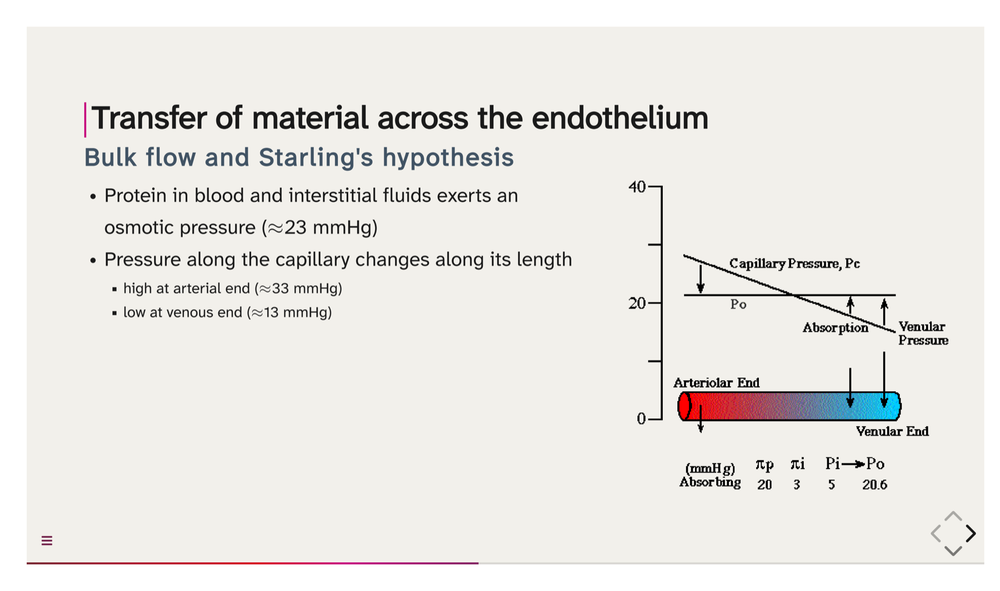
The graph is the same story drawn continuously: the sloping line is capillary pressure falling from ~33 mmHg (arterial) to ~13 mmHg (venous); the flat line is the roughly constant plasma oncotic pressure (~23 mmHg). Where hydrostatic is above oncotic you filter; where it drops below you absorb. (These approximate textbook numbers differ slightly from the worked values — the principle, not the exact figure, is what matters.)
SLIDE 29Average forces — Starling equilibrium
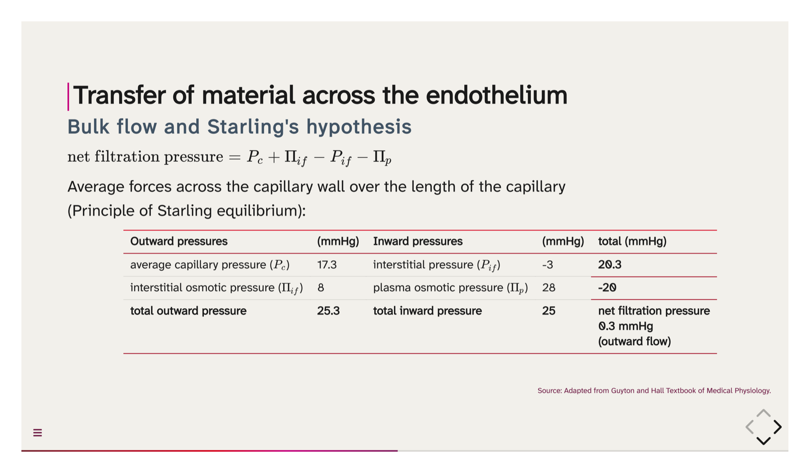
SLIDE 30Starling equilibrium, stated
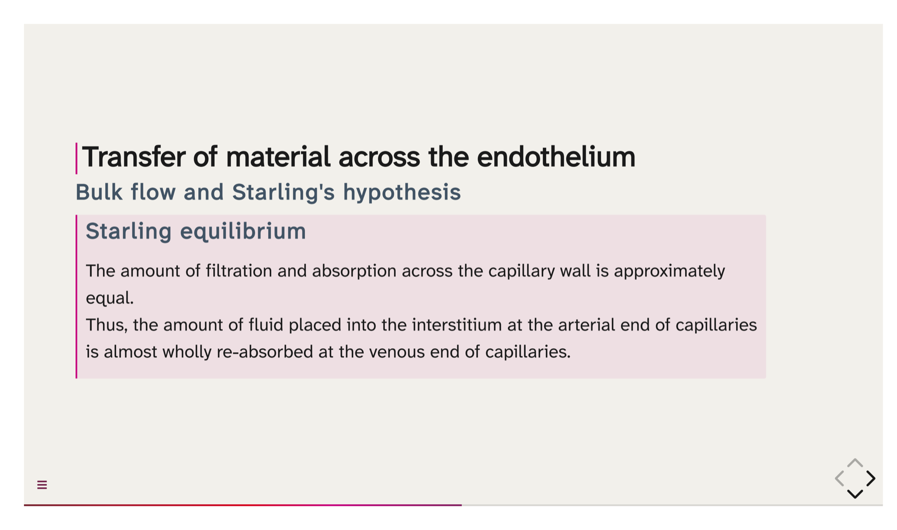
Starling equilibrium is just the averaged result: over the whole capillary, filtration and reabsorption nearly match, so almost all the fluid dropped into the tissue at the arterial end is reclaimed at the venous end — but almost, not all. That tiny surplus is the thread that leads straight to the lymphatics.
Clinical · the four causes of oedema
This equation is the oedema checklist. Push filtration up and you get tissue swelling by one of four routes: ↑Pc (heart failure, venous obstruction, DVT), ↓Πp (low albumin — liver failure, nephrotic syndrome, malnutrition), ↑capillary permeability so protein leaks and Πif rises (inflammation, burns, sepsis, allergy), or blocked lymphatics (§7). Any oedema you'll ever see maps onto one of these four terms.
SLIDE 31Where does the surplus fluid go?
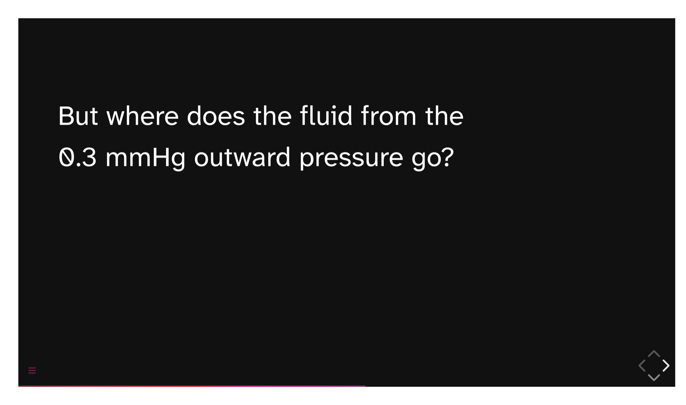
SLIDE 32…the lymphatic system
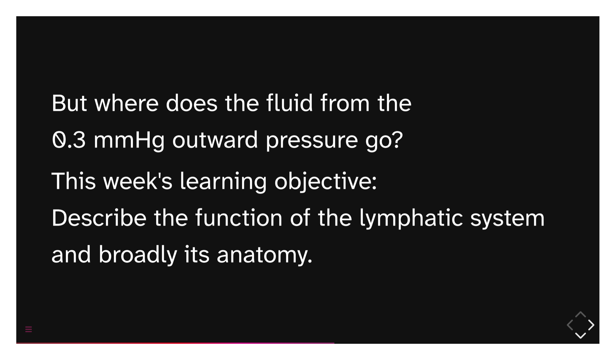
The lecture poses the question deliberately: that small net outward flow can't just accumulate, or every tissue would swell. The answer — the lymphatic system — is §6, and it's also the reason losing it (§7) causes oedema.
R Recall — capillaries, the wall & Starling
Capillary bed has — the largest total cross-section, so the slowest flow (best for exchange)
Cleft width ~7 nm — holds back albumin, which creates the oncotic gradient
Starling equation — NFP = Pc + Πif − Pif − Πp
Arterial vs venous end —+13 (filter) vs −7 mmHg (reabsorb)
What flips the balance — the fall in capillary hydrostatic pressure along the length
Four causes of oedema — ↑Pc, ↓Πp, ↑permeability, blocked lymphatics
§4LO · Evolving physiology
Revising Starling — the glycocalyx
Why the neat "reabsorb at the venous end" picture is largely wrong.
Good physiology updates with evidence. The classic model you just learned has two real problems, and the fix — the endothelial glycocalyx — changes where the oncotic gradient actually sits.
SLIDE 35The Starling-Landis model
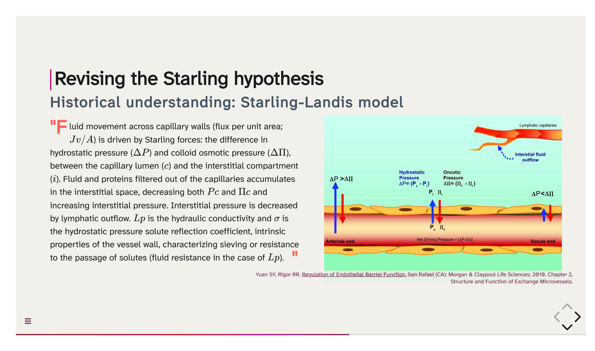
The quantitative form adds two properties of the wall itself: Jv/A = Lp(ΔP − σΔΠ), where Lp (hydraulic conductivity) is how leaky the wall is to water, and σ (the reflection coefficient, 0–1) is how well it holds back protein. σ near 1 means a tight wall where the full oncotic pull counts; σ near 0 (a sinusoid) means protein crosses freely and oncotic pressure barely matters. Same forces as before — now scaled by the wall's real properties.
SLIDE 37Problems with the classic model
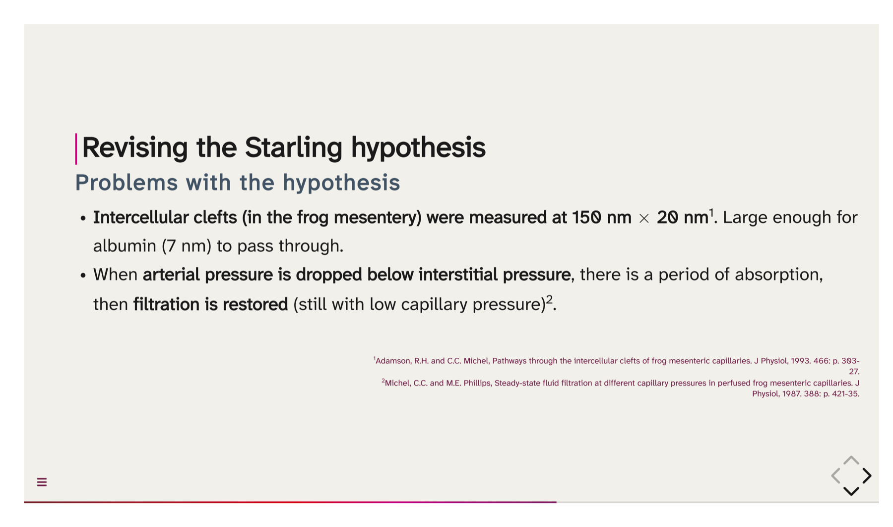
Why · two inconvenient facts
First, measured clefts (~150 × 20 nm in frog mesentery) are actually big enough to let albumin through — so the bulk interstitium shouldn't stay protein-poor the way the simple model assumes. Second, when experimenters dropped capillary pressure, sustained reabsorption didn't persist — after a transient, filtration resumed even at low pressure. The tidy "filter at the arterial end, reabsorb at the venous end" loop doesn't hold up.
SLIDE 38The endothelial glycocalyx
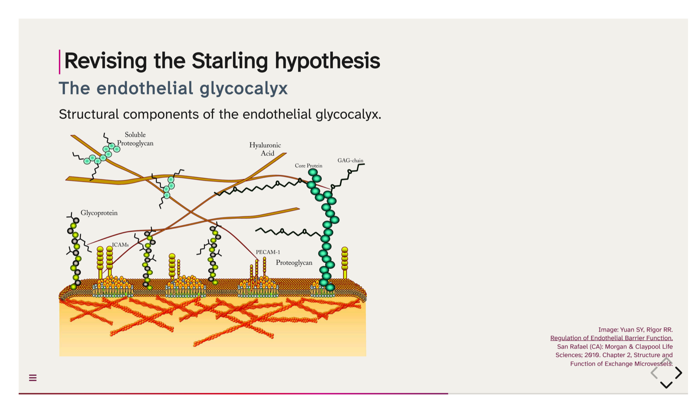
The resolution is a structure the old model ignored: the glycocalyx, a gel-like mesh of proteoglycans and glycoproteins coating the luminal surface of the endothelium. This — not the cleft — is the real molecular sieve that reflects protein.
SLIDE 40The revised Starling principle
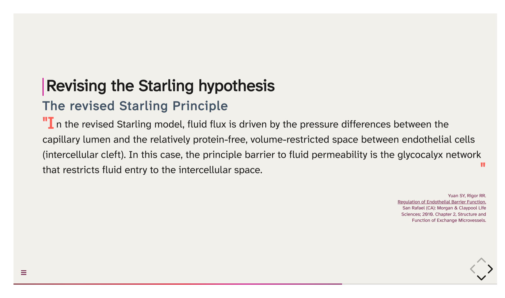
Clinical · the glycocalyx model and sepsis
In the revised principle the oncotic gradient that counts is across the glycocalyx — between plasma and the tiny protein-poor sub-glycocalyx space, not the bulk interstitium. The practical upshots: most capillaries filter along their whole length (the "no-reabsorption rule") and rely on lymphatics to return the fluid; and when the glycocalyx is damaged — classically in sepsis, also in diabetes and ischaemia-reperfusion — σ collapses, protein and fluid pour into the tissue, and you get the capillary-leak oedema and hypovolaemia of septic shock. It also explains why infused colloid doesn't expand plasma volume as much as the old model predicted.
§5LO · Interstitium constituents
The interstitium
The space the fluid filters into — and why it normally stays "dry".
Filtered fluid doesn't enter an empty void; it enters a structured gel. Its make-up explains why tissues aren't permanently swollen and why oedema behaves the way it does.
SLIDE 43The interstitium — gel, fibres and free fluid
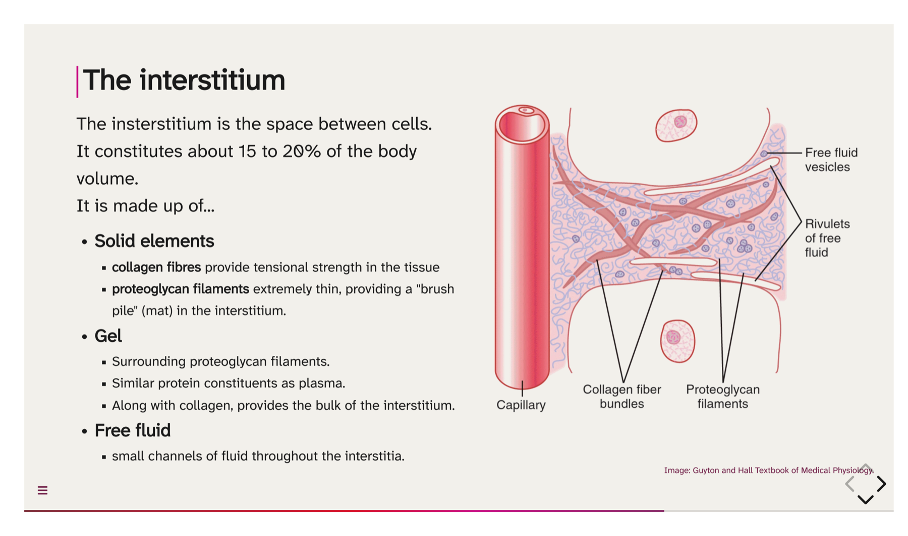
Why · the gel keeps you dry
Most interstitial fluid is bound in a proteoglycan gel, not free — the gel holds it like a sponge at a slightly negative pressure, which is what keeps tissues from swelling and actually helps pull fluid out of the capillary. That bound state gives a large buffer: tissue can take up a fair volume before free fluid accumulates and pitting oedema appears. Collagen fibres supply the tensile scaffold the gel sits in.
§6LO · Lymphatic system
The lymphatic system
The overflow drain that also recovers escaped protein — and why life depends on it.
The lymphatics are the answer to "where does the net filtered fluid go?" They're a one-way, low-pressure drainage system with no central pump — and they do one job the blood capillaries cannot.
SLIDE 46Function of the lymphatic system
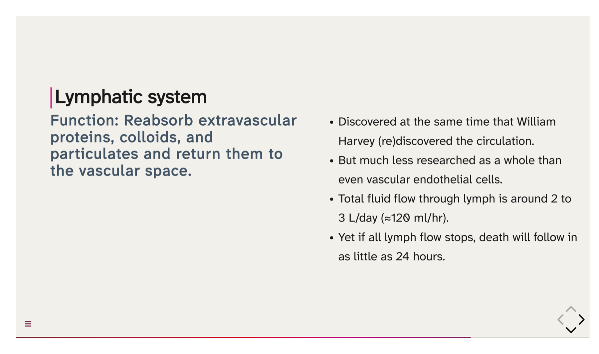
Why · lymph is not optional
The critical job is protein recovery. A little plasma protein always escapes the capillary, and it cannot diffuse back in (wrong-way gradient). Only the lymphatics can return it. If they didn't, interstitial protein would climb, Πif would rise, filtration would run away — which is why returning just ~2–3 L/day is life-critical, and why total lymphatic blockage is fatal within ~24 hours.
SLIDE 48Lymphatic capillaries — built as valves
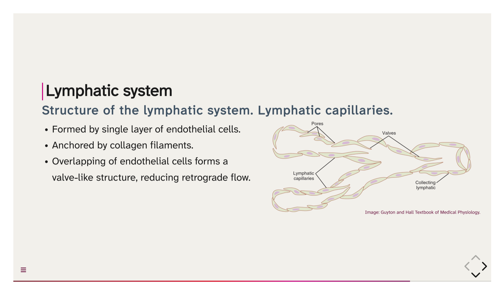
The structure is purpose-built for one-way, low-pressure uptake: a single endothelial layer with cells that overlap like flap-valves, tethered open by collagen anchoring filaments. Fluid (and protein, and even cells) pushes the flaps inward to enter, but can't push back out — a passive valve made of overlapping cells.
SLIDE 49The lymphatic capillary pump
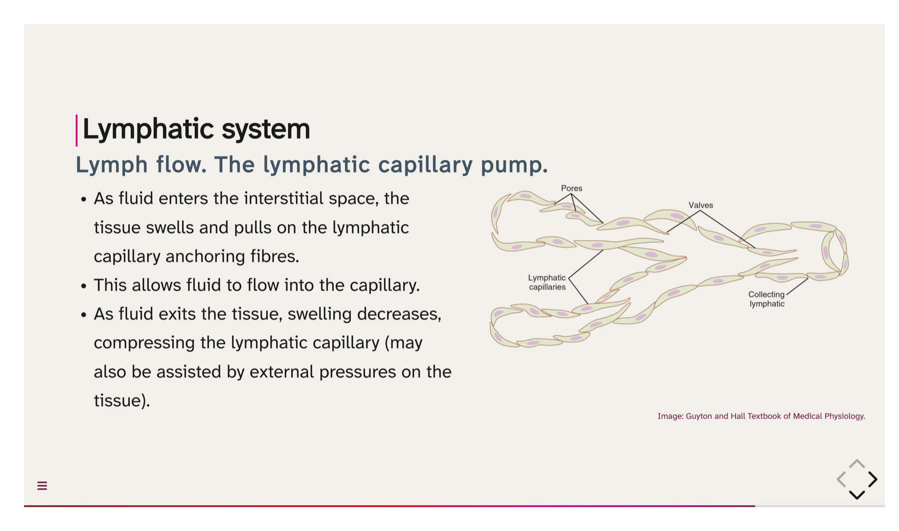
Why · the swelling is self-correcting
Elegantly, the system is driven by the very problem it fixes: as interstitial fluid rises, the tissue swells and pulls on the anchoring filaments, levering the flap-valves open so fluid floods in; as the tissue drains and shrinks, the capillary is compressed and fluid is pushed onward. More interstitial fluid → more lymph uptake, automatically.
SLIDE 50Intrinsic lymphatic pump
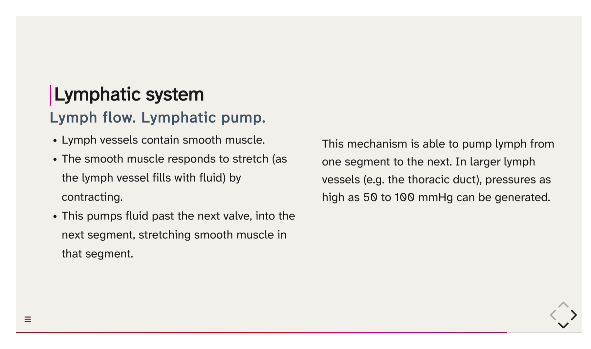
SLIDE 51External compression
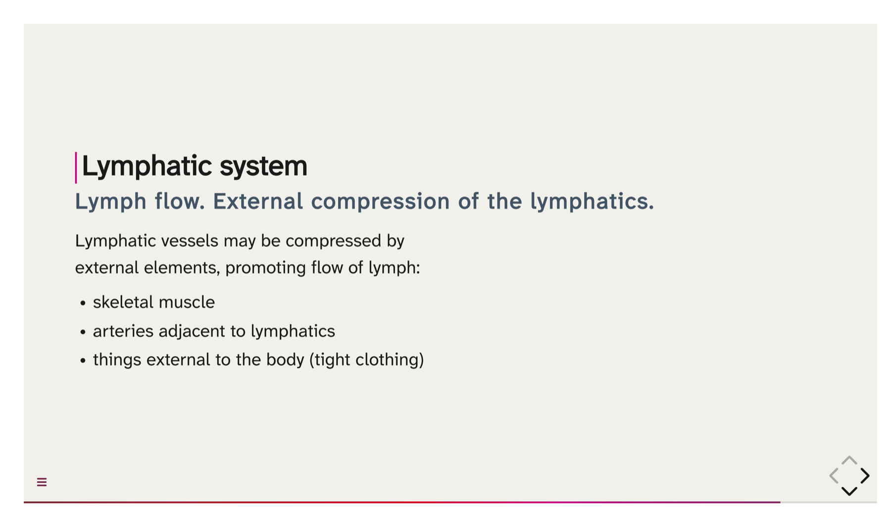
With no heart to drive it, lymph is moved two more ways. Larger lymph vessels have their own smooth muscle that contracts when stretched by filling — an intrinsic pump segment-to-segment — and one-way valves stop backflow. On top of that, external compression from contracting skeletal muscle and pulsating adjacent arteries milks the vessels along. Remember these three drivers — they're exactly what lymphoedema treatment tries to recreate (§7).
§7LO · Lymphoedema
Lymphoedema
What happens when the return limb of Starling's balance fails.
If the lymphatics can't clear the net filtered fluid, it accumulates — and because it's protein-rich, the swelling behaves differently from ordinary oedema.
SLIDE 54Lymphoedema — definition & staging
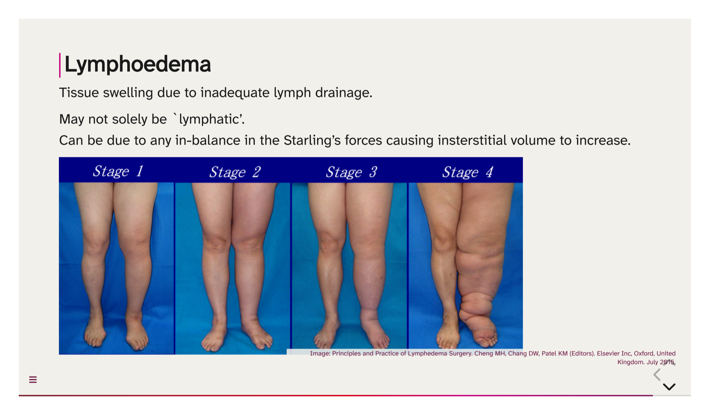
Lymphoedema is swelling from inadequate lymph drainage — the fourth cause of oedema from §3, the one the Starling equation itself doesn't contain. The slide's honest caveat matters: in practice any lasting imbalance in Starling's forces that raises interstitial volume contributes, so "pure" lymphatic failure and the other three mechanisms often overlap.
SLIDE 55Clinical presentation
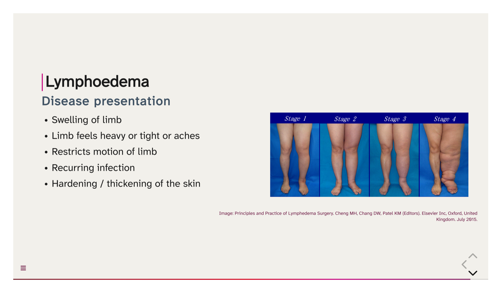
Clinical · why it's not just "swelling"
Because the trapped fluid is protein-rich, it doesn't stay simple: the protein drives chronic inflammation and fibrosis, so the limb becomes heavy, tight and hard, the skin thickens, and stagnant protein-rich fluid is a breeding ground for recurrent cellulitis. Late lymphoedema becomes non-pitting as fibrosis sets in — a useful bedside clue that it's lymphatic rather than a fresh ↑Pc/↓Πp oedema.
SLIDE 56Primary vs secondary lymphoedema
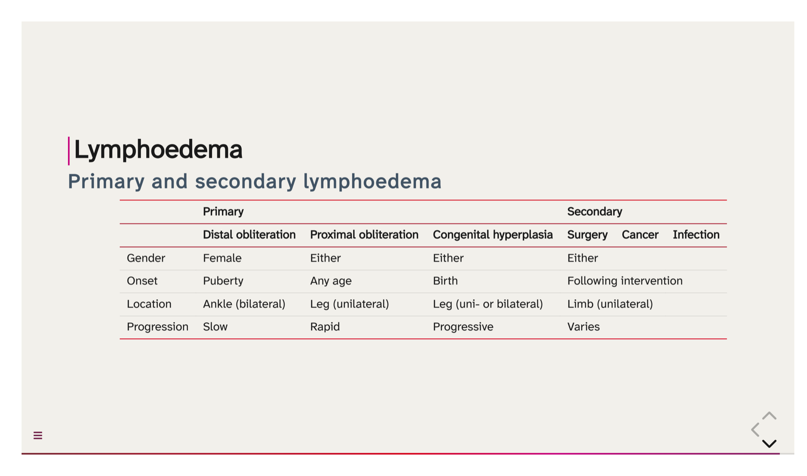
Clinical · know the common causes
Primary lymphoedema is a developmental fault of the lymphatics (distal or proximal obliteration, congenital hyperplasia; often female, onset at puberty or birth). Secondary is acquired damage — worldwide the leading cause is filariasis (Wuchereria bancrofti), while in high-income settings the classic culprit is axillary lymph-node clearance and radiotherapy for breast cancer, giving arm lymphoedema. "Young woman, puberty onset, both ankles" vs "one arm after breast-cancer surgery" are the two exam vignettes.
SLIDE 57Management
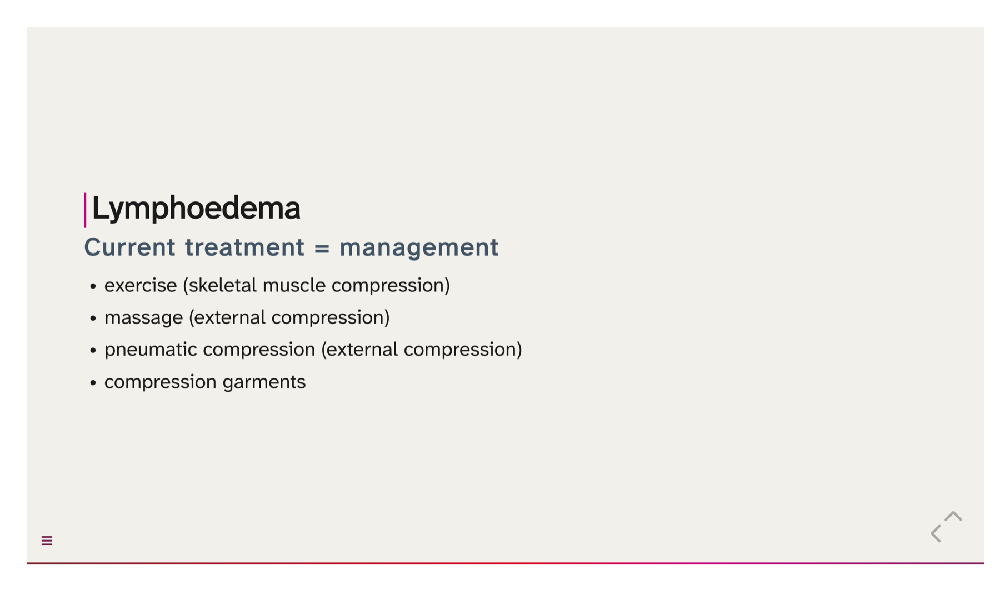
There's no cure — the goal is to drive lymph flow mechanically, and every option is just one of the §6 pump mechanisms borrowed: exercise (skeletal-muscle compression), manual lymphatic drainage / massage and pneumatic compression (external compression), and compression garments (raising tissue pressure to limit filtration). The treatment list falls straight out of the physiology.
R Recall — glycocalyx, interstitium, lymph & lymphoedema
Revised Starling barrier — the glycocalyx; gradient is across it (plasma vs sub-glycocalyx space)
No-reabsorption rule — capillaries filter along their length; lymphatics return the fluid
Glycocalyx damage — in sepsis → capillary leak
Interstitial gel — holds fluid at negative pressure; buffers before pitting oedema
Lymph returns — ~2-3 L/day plus escaped protein; stoppage fatal in 24 h
Lymphoedema is —protein-rich → fibrosis and infection; primary vs secondary
Commonest secondary cause —filariasis (worldwide) / breast-cancer surgery (high-income)
Built from: MHHS2402 Week 9 — Capillary fluid exchange (A/Prof. Mark Butlin), Macquarie University. Personal study aid: the lecture's own slides, each explained in depth. Not for redistribution.
All 37 content slides covered, in order. Click any slide to enlarge; quote a code (e.g. §3) to go deeper, or hit Generate quiz (top) to spin one up from this guide.
scroll or +/− to zoom · drag to reposition · Esc to close